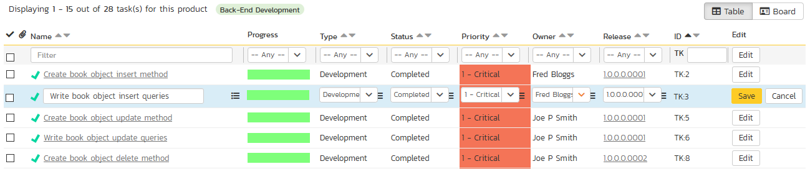
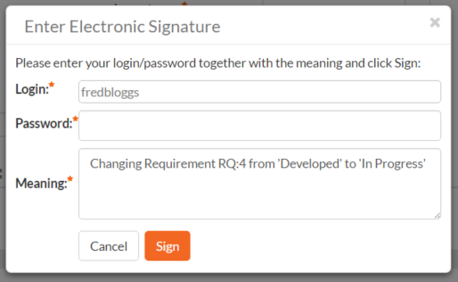

Task Tracking
This section outlines how you can use the Task Tracking features of SpiraPlan® and SpiraPlan® to view and manage the discrete activities that each member of the development team would need to carry out for the requirement to be fulfilled. Each task can be assigned to an individual user as well as associated with a particular release or sprint. The system can then be used by the product manager to track the completion of the different tasks to determine if the product is on schedule.
The tasks can be organized into different folders as well as categorized by different types (development, testing, infrastructure, etc.), each of which can have its own workflow which defines the process by which the task changes status during the product lifecycle.
Task List
When you click on the Tracking > Tasks global navigation link, you will initially be taken to the tasks list screen illustrated below:

The task list screen displays all the tasks entered for the current product by folder, in a filterable, sortable grid. The grid displays the task number together with fields such as priority, name, assigned owner, start date, end date, scheduled release, etc. The choice of columns displayed is configurable per-user, per-product, giving extensive flexibility when it comes to viewing and searching tasks.
In addition, you can view a more detailed description of the task by positioning the mouse pointer over the task name hyperlink and waiting for the popup "tooltip" to appear. If you click on the task name hyperlink, you will be taken to the task details page Clicking on any of the pagination links at the bottom of the page will advance you to the next set of tasks in the list according to the applied filter and sort-order. There is also a drop-down-list at the bottom of the page which allows you to specify how many rows should be displayed in each page, helping accommodate different user preferences.
One special column that is unique to tasks is the 'progress indicator'. This illustrates graphically both the percentage completion of the task and also if the task is either starting late or finishing late. The following table illustrates the different type of status that can be conveyed by the indicator:
| Indicator Display | Progress Description |
|---|---|
| Task has not yet started, but the scheduled start date is still in the future. | |
| Task has not yet started, and the start date has elapsed. This is considered a 'Late Starting Task' | |
| Task has started, and is approximately 25% complete. The scheduled end date is still in the future. | |
| Task has started, and is approximately 50% complete. However the scheduled end date has elapsed already. This is a considered a 'Late Finishing Task'. | |
| Task has been 100% completed. |
Essentially, the gray section of the bar indicates the % of the task yet to be completed, and the green/red section of the bar indicates the % of the task that has already been completed. If the bar changes from green to red it means that the end date has been reached and the task is not yet complete, and if the background changes from gray to yellow it means that the task has not yet started, but the scheduled start date has passed.
Task Folders
SpiraPlan lets you group product tasks into different folders to make organization easier. In the left-hand Quick Filters panel, the system displays the various task folders defined in the product:

If you are a product administrator, you will see the 'Edit' and 'Add' buttons beneath the folder tree, this lets you add, edit and delete task folders in the product. To add a new folder, click the 'Add' button:

Choose the parent folder that you want to add the new folder under (or None if you are adding a new top-level folder) from the dropdown list and then enter the name of the new folder. Then click 'Add' to save the new folder.
To edit or delete an existing folder, simply click the
"Edit" button to switch the folder tree to edit
mode. To edit or delete a specific folder, click on the
"Edit" button next to the folder:

You can change the parent folder and/or name of the folder and click "Update" to commit the change or click "Delete" to delete the folder entirely.
To move a task / tasks between folders, click and drag the relevant task/tasks from the table on the right, and drag them over the desired folder in the tree view on the left. The destination folder will be highlighted to show where the task will be placed.
Sorting and Filtering
You can easily filter and sort the list of tasks as illustrated in the screen-shot below:

To filter the list by progress, status, priority, owner or release, you simply choose an item from the appropriate drop-down list, and for the other fields, you enter a free-text phrase and click "Filter" or press the <ENTER> key to apply. Note that the name field is searched using a "LIKE" comparison, so that searching for "database" would include any item with the word database in the name. The other freetext fields need to be exact matches (e.g. dates, task numbers).
To change the column that is sorted, or to change the direction of the current sort, simply click on the up/down arrow icon in the appropriate column. The currently sorted column is indicated by the darker arrow. In the screen-shot above, we have filtered on tasks that are finishing late, sorted in order of decreasing priority.
Clicking on Filter > Clear Filter removes any set filters and expands the task list to display all tasks for the current product, and clicking on Filter > Save Filter allows you to save the filter to your 'My Page' for use in the future. The list of saved filters can also be retrieved by clicking Filter > Retrieve Filter.
As a shortcut, the left hand panel includes a set of Quick Filters that can be applied in a single-click:
-
The topmost section displays any saved filters created by the current user or that are shared with the current user (the former are designated with an icon representing a single person, the latter a group of people)
-
Components -- This section lists the components defined for the current product. Clicking on any of the components in the list will filter the tasks to only show those that belong to the selected component. Tasks are linked to components indirectly through their associated requirement.
-
Releases -- This section lists the releases and sprints defined for the current product. Clicking on any of the releases or sprints in the list will filter the requirements by that release/sprint.
New Task
Clicking on the "New Task" button creates a new task in the grid with an initial set of information. You can click on the name of the task to edit its information.
Delete
Clicking on the "Delete" button deletes the tasks whose check-boxes have been selected in the task list.
Refresh
Clicking on the "Refresh" button simply reloads the list of tasks; this is useful when new tasks are being added by other users, and you want to make sure you have the most up-to-date list displayed.
Show / Hide Columns
This drop-down list allows you to change the fields that are displayed in the task list as columns for the current product. To show a column that is not already displayed, simply select that column from the list of "Show..." column names and to hide an existing column, simply select that column from the list of "Hide..." column names. This is stored on a per-product basis, so you can have different display settings for each product that you are a member of. The fields can be any of the built-in fields or any of the custom properties set up by the product owner.
Edit
Each task in the list has an "Edit" button display in its right-most column. When you click this button or just click on any of the cells in the row, you change the item from "View" mode to "Edit" mode. The various columns are made editable, and "Save" buttons are displayed in the last column:

If you click "Edit" on more than one row, the "Save" buttons are only displayed on the first row, and you can make changes to all the editable rows and then update the changes by clicking the one "Save" button. Also, if you want to make the same change to multiple rows (e.g. to change five tasks from "Not Started" status to "In Progress"), you can click on the "fill" icon to the right of the editable item, which will propagate the new value to all editable items in the same column.
If you want to edit lots of items, first select their checkboxes and then click the "Edit" button on the same row as the Filters and it will switch all the selected items into edit mode.
When you have made your updates, you can either click "Save" to commit the changes, or "Cancel" to revert back to the original information. Alternatively, pressing the <ENTER> key will commit the changes and pressing the <ESCAPE> key will cancel the changes.
Duplicating Tasks
To create a clone of a task or set of tasks, select the check-boxes of the tasks you want to clone and then click "Clone". This will make a clone of the current task in the current folder with its name prefixed 'Copy of ....' to distinguish itself from the original. Any file attachments will also be copied along with the task itself.
Exporting Tasks to Another Product
To export a task or set of tasks from the current product to another product in the system, select the check-boxes of the task(s) you want to export and then click Tools > Export to Product. This will bring up a list of possible destination products:
Once you have chosen the destination product and clicked the "Export" button, the tasks will be exported from the current product to the destination product. Any file attachments will also be copied to the destination product along with the tasks.
Printing and Saving Items
To quickly print a single task or list of tasks you can select the items' checkboxes and then click Tools > Print Items. This will display a popup window containing a printable version of the selected items. You can also save the report in a variety of common formats from the same Tools menu.
Task Details
When you click on a task item in the lists displayed on either the main task list page or on the requirement / release details pages, you are taken to the task details page illustrated below:

This page is made up of three areas;
-
the left pane displays the tasks list navigation;
-
the right pane's header, which displays: the operations toolbar; the editable name of the selected task; and the info bar (with a shaded background), which also contains the workflow status transitions (see below); and
-
the right pane's tabbed interface with rich information related to the task.
Please note that on smaller screen sizes the navigation pane is not displayed. While the navigation pane has a link to take you back to the tasks list, on mobile devices a 'back' button is shown on the left of the operations toolbar.
The navigation pane can be collapsed by clicking on the "-" button, or expanded by clicking anywhere on the gray title area. On desktops the user can also control the exact width of the navigation pane by dragging and dropping a red handle that appears on hovering at the rightmost edge of the navigation pane.
The navigation pane consists of a link that will take you back to the task list, as well as a list of tasks, and another list of the other related tasks, nested under their parent task. This latter list is useful as a navigation shortcut; you can quickly view the peer tasks by clicking on the navigation links without having to first return to the tasks list pages. The navigation list can be switched between five different modes:
-
Current Filter - The list of tasks matching the current filter organized by task folder
-
All Items - The list of all tasks, irrespective of the current filter, organized by task folder
-
Assigned - The list of tasks assigned to the current user grouped by their parent requirement
-
For Release - The list of tasks assigned to the current release or sprint, grouped under that parent release/sprint.
-
For Requirement -- The list of tasks associated to the same requirement as the current task as well as other tasks at the same level in the requirement hierarchy.
On the main right hand side of the page, which of the fields for the currently selected task are available and which are required will depend on your stage in the task workflow. For example, a completed task might not require a "Release" whereas an In Progress task could well do. The types of change allowed and the fields that are enabled/visible/required will depend on how your product administrator has set up the system for you. Administrators should refer to the SpiraPlan Administration Guide for details on configuring the task workflows to better meet their needs.
Depending on the user's role and whether they are listed as the owner or author of the task, displayed in the info bar beneath the task name is the current workflow status and an "operations" button which, when clicked, will show a set of allowed workflow operations:
These workflow transitions allow the user to move the item from one status to another. For example when the task is in the In Progress status, you will be given the options to:
Block Task -- changes status to "Blocked"
Complete Task -- changes the status to "Completed"
Defer Task -- changes the status to "Deferred"
Restart Development -- changes the status to "Not Started"
Please note that if digital signatures have been enabled for a particular workflow operation (and therefore a digital signature is required to confirm the status change. Workflow operations requiring a digital signature are marked with a padlock icon as in the example below:
On attempting to save changes made after clicking a workflow operation that requires a digital signature you will be presented with a popup similar to the one below (which is for a requirement):

Once you've made the changes to the appropriate task fields, you can either click "Save" or one of the options from the "Save" dropdown to commit the changes, or "Refresh" to discard the changes and reload the task from the database. In addition you can print or export the current task to a number of common formats via the Tools menu.
To send the task to a colleague click the email button:
You can specify the subject line for the email, and either a list of email addresses, separated by semicolons, or an existing product user .The content of the email is specified in the System Administration -- Notification Templates.
The lower part of the right pane can be in one of four possible tabs that can be selected: "Overview Properties", "Attachments", "History" and "Associations". Each of the different views is described separately below.
Overview -- Details
The Overview tab is divided into a number of different sections. Each of these can be collapsed or expanded by clicking on the title of that section. It displays the description, fields and comments associated with the task.
The top part of this tab displays the various standard fields and custom properties associated with the task. Fields (both standard and custom) are grouped under the collapsible headings (marked by orange text and underline) in the screenshot below. For instance, all fields regarding dates are grouped together in the "Dates and Times" area.

Effort Fields
You can enter/edit the start-date, end-date (i.e. the due-date), estimated, actual and remaining effort. From this the system will calculate the progress, percentage complete and producted final effort.
The different effort values mean the following:
Estimated Effort -- This is the original estimate for how long the task would take to complete.
Actual Effort -- This is the current amount of effort that has been expended in completing the task. This does not indicate the completion progress
Remaining Effort -- This is the estimate for how it will take from the current state to complete the task. The % complete is calculated from this value in conjunction with the estimated effort: % Complete = 100% - (Remaining Effort / Estimated Effort)
Producted Effort -- This is value that the system is producting it will take to complete the task. This is calculated from the Actual Effort and Remaining Effort:
Producted Effort = (Actual Effort + Remaining Effort)
Note: If the actual effort is not specified, the producted effort will be the same as the estimated effort.
Note: if the task is currently assigned to a release or sprint, the start-date and end-date of the task must lie within the date-range of the parent release/sprint. If your task looks like it will not be completed in the available timeframe, you will need to contact the product manager to get them to either extend the date-range of the task, or consider moving the task to the next sprint.
Followers
Using the "Subscribe" button on the toolbar, you can quickly follow the item, and receive updates on certain changes to it. Depending on your role, you may also see a dropdown to this button, which let's you add another product member as a follower to this item.


You can also quickly see who is following an incident under the "People" section in the Overview tab.

To view information about the follower, or to unfollow them from the item, hover over their avatar to display a user profile card.

Overview -- Comments
The comments tab will display the comments associated with the task:
All existing comments are displayed in date entered underneath the textbox. To enter a new comment, enter the text into the textbox, and then click the "Add Comment" button.
Attachments
Read about how the attachments tab works
Associations
You can associate other tasks, incidents, and source code to a task from this tab. Read more about how to manage and add associations to this artifact
History
Read about how the history tab works
Task Board
The task board is an alternative to the task list page designed to let you view the tasks planned for the current product. You can access this feature by clicking on the Board icon in the top-right of the Tasks list page. You can switch back to the Task list page by clicking on the Table view.
The task board has the following different display modes:
-
All Releases
- By Release
- By Priority
- By Status
- By Person
-
Release
- By Sprint
- By Priority
- By Status
- By Person
-
Sprint
- By Priority
- By Status
- By Person
Each of these views is described below:
Tasks -- By Priority
This view is designed to let you see the list of planned tasks organized by priority. Each of the possible priority values is displayed on the left-hand side and the tasks displayed in the same row on the right:
The top section will contain the list of tasks that are not assigned a priority, with the other sections containing the tasks that have been assigned to the specific priority.
Tasks -- By Status
This view is designed to let you see the tasks in the current product / release / sprint organized by their status. Each task status (not started, in progress, completed, blocked, deferred) is displayed as a heading, with the tasks displayed in the same column underneath:

You can click on the expand/collapse icons to hide any resources that are not relevant.
Depending on the view (all releases, release, or sprint), there may be sections with the release and sprint name. You can drag and drop the tasks between statuses or to/from the release/sprint backlog. Any tasks not assigned to a release/sprint will be listed in the (Unassigned Items) section at the top.
Tasks - By Person
This view is designed to let you see the tasks in the current product / release / sprint organized by resource / person. Each of the users that is a member of the current product is displayed as a heading, with the tasks displayed in the same column underneath. This view is often called the Task Board:

You can click on the expand/collapse icons to hide any resources that are not relevant. The system will display a progress bar for each resource to illustrate the allocation for that resource. Any resource that has a progress bar that is completely green has been fully scheduled and should not have any additional tasks assigned. If the progress bar for that resource turns red, it means that they have been over-scheduled and you need to reassign some of the tasks.
Depending on the view (all releases, release, or sprint), there may be sections with the release and sprint name; they contain tasks that are scheduled for the current release or sprint but have not yet been assigned to a resource. You can drag and drop the tasks between resources or to/from the release/sprint backlog. Any tasks not assigned to a resource and release/sprint will be listed in the (Unassigned Items) section at the top.
Tasks - By Release
This view is only available when you are displaying the task board for 'all releases'. Each of the active releases defined for the current product is displayed as a heading, with the tasks displayed in the same column underneath

You can drag and drop the tasks between the different releases. Once the task has been added to the release, the utilized effort for the release will increase, and the available effort will decrease by the same amount.
Note: The system will allow you to assign more tasks to a release than it is possible to complete, however this will result in a negative value for 'available effort'. If this happens, the "Available Effort" value will be displayed in red, and you need to rebalance the items, extend the release length or add product personnel resources to the release.
Clicking on the release hyperlinks in the headers will switch the task board into the release view.
Tasks - By Sprint
This view is only available when you are displaying the task board for a specific release. Each of the sprints defined for the current release is displayed as a heading, with the tasks displayed in the same column underneath. This view is commonly used in Scrum products:

You can drag and drop the tasks between the different sprints. Once the task has been added to the sprint, the utilized effort for the sprint will increase, and the available effort will decrease by the same amount.
Note: The system will allow you to assign more tasks to a sprint than it is possible to complete, however this will result in a negative value for 'available effort'. If this happens, the "Available Effort" value will be displayed in red, and you need to rebalance the items, extend the sprint length or add product personnel resources to the sprint.
Clicking on the sprint hyperlinks in the headers will switch the task board into the sprint view.
Tasks - By Requirement
This option is only available when you are displaying the task board for a specific release or sprint.
In this case, the left hand side displays the requirements currently assigned to the current release / sprint, and the right hand column contains the tasks (in a card format) that are associated with that specific requirement, complete with color-coded progress bars. This view lets you quickly see all of the current user stories being worked, and the progress of completing the related tasks, in a single unified view.